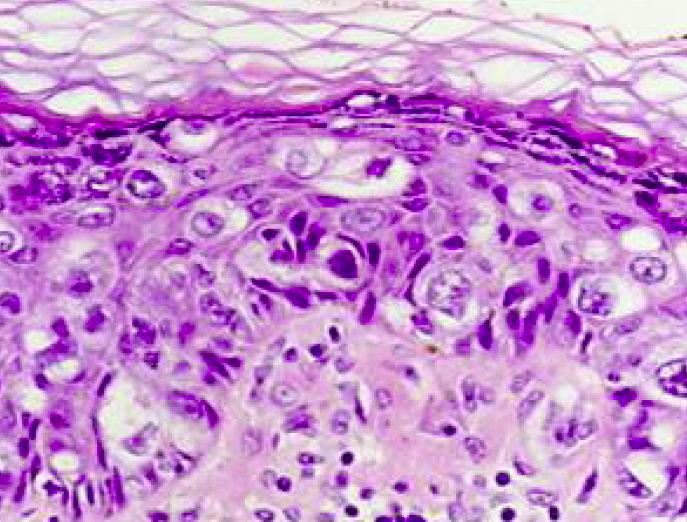

CyberKnife
A new weapon in the battle against cancer
Courtney Miller
Fall 2005

Overcoming cancer has always been thought of as a battle--there are
those who can win and those who cannot. From the debilitating effects
of chemotherapy to the time spent recovering from surgery, surviving
cancer becomes a full-fledged war with the body. Fortunately, there has
been an explosion in the development and application of new techniques
in the fight against cancer, and it seems that every field of cancer
research is brimming with potential and hope. One of the most promising
fields in medicine today is radiation oncology.
Radiation has long since been an effective weapon in
a physician’s arsenal against tumor control. In the 1950s, radiation
was first used for patients with lymphoma. Doctors shot a very high
dose of X-rays through the patient’s body in hopes of destroying the
tumor and its ability to grow. Though this radiation was effective in
killing tumors, it also damaged surrounding healthy cells. Recently,
researchers have perfected a new technique that allows successful
treatment sans excessive blood loss or even the use of scalpels. This
novel surgical approach employs the CyberKnife, a giant robotic arm
that delivers therapeutic radiation with incredible precision.
Derived from a machine that manufactures
automobiles, the CyberKnife was invented by researchers at Stanford
University in 1998. The machine stands over 14 feet tall and is
composed of three main parts: a compact linear accelerator (LINAC) and
a robotic base and arm. The latter two components guide the radiation
to exact locations on the patient’s body, which lies on a table beneath
the machine. Mounted on the robot arm, the LINAC is responsible for
holding and delivering the doses of radiation. A computer system
located outside the CyberKnife room guides the robotic arm by using
detailed imaging information and complicated mathematical processes
that essentially create a three dimensional representation of the
tumor. This information then directs the robotic arm to the tumor’s
exact location. To ensure accuracy, information from the computer
aligns with the data from the marker location to keep the radiation
beams on track at all times. While the patient lies on a bed underneath
the robotic arm, a series of X-ray and magnetic resonance imaging (MRI)
machines surround the patient in order to report any patient movement
to the computer. The CyberKnife is thus able to compensate for the
patient’s motion by adjusting its pathway.
Since the image-guided system allows the patient to
relax or even sleep during the surgery, it provides a considerable
advance in comfort over the older stereotaxic method, which required
patients to wear a metal brace to prevent movement. To help steer the
CyberKnife, surgeons place fiducial makers—which are gold particles
readily visualized by most imaging technology—into the region in which
they will operate. Previously, many tumors were considered inoperable
because of the movement associated with the patient inhaling and
exhaling. Now, however, with the placement of fiducial markers into the
interior of the tumor, the computer can keep track of its location,
despite any breathing or movement, and keep the radiation precisely on
target. Although the placement of these markers requires a small
surgery and an incision in the neck where the guide wire is placed,
this a small price to pay for its life saving results.